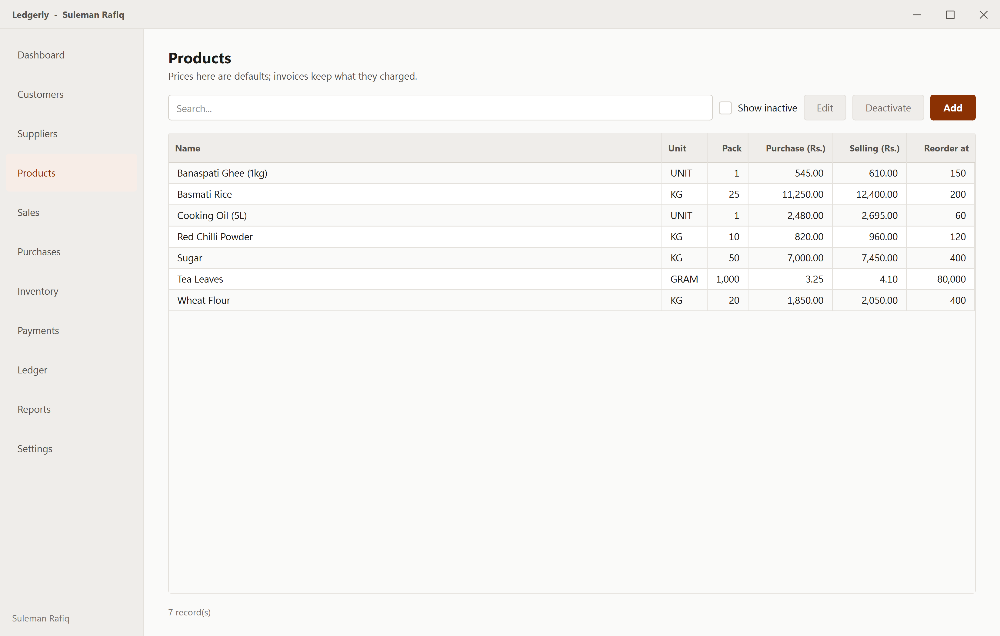
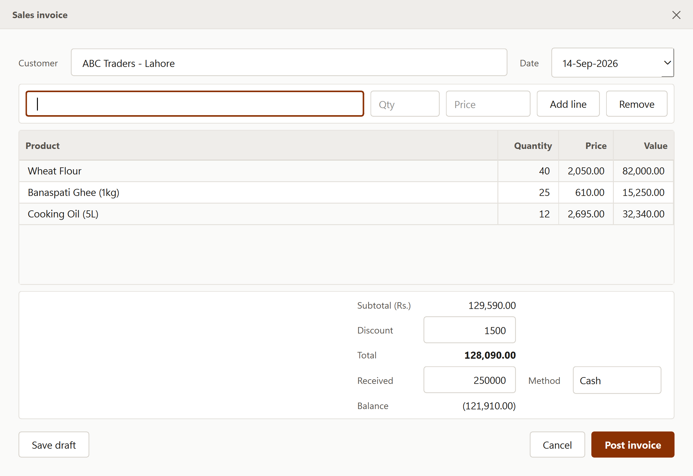
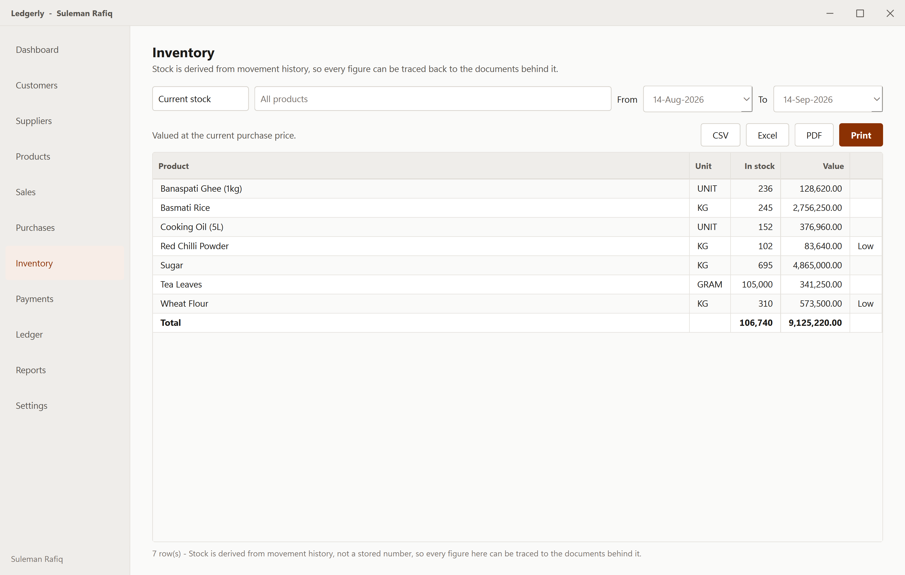
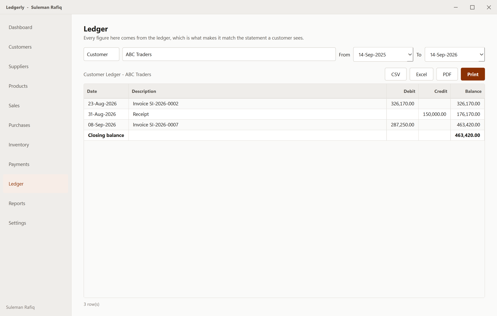
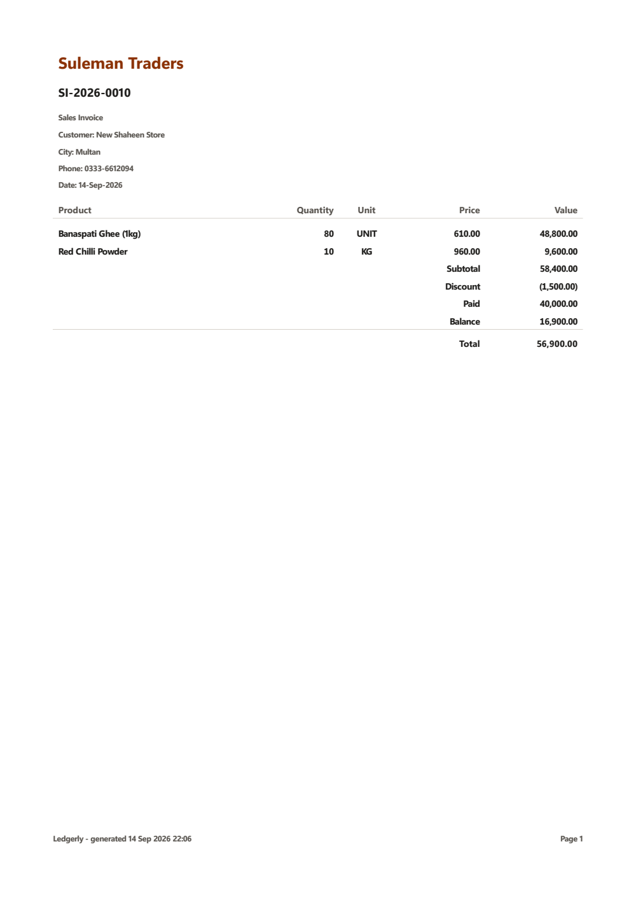

Guide
Everything from installing Ledgerly to closing off a month. If you are in a hurry, the first three sections get you invoicing.
Installing
Download LedgerlySetup-0.1.0.exe and double-click it. There is nothing else to install — no Python, no database, no Visual C++ runtime — and it does not ask for an administrator password, because it installs for your user account only.
The SmartScreen warning
The installer is not code-signed yet, so the first time you run it Windows shows a blue box saying “Windows protected your PC”. That is Windows saying it has not seen this file before, not that anything is wrong with it. Click More info, then Run anyway.
To satisfy yourself the download is intact, open PowerShell and run:
Get-FileHash .\LedgerlySetup-0.1.0.exe -Algorithm SHA256
The result should match the SHA-256 shown on the download section of the home page. If it does not, delete the file and download it again.
What gets installed where
| What | Where |
|---|---|
| The application | %LOCALAPPDATA%\Programs\Ledgerly |
| Your data, backups and logs | %LOCALAPPDATA%\Ledgerly |
Those are deliberately separate. Uninstalling or reinstalling Ledgerly removes the application and leaves your books untouched — the uninstaller reminds you where they are.
Portable installs. If you want the application and
its data together on a USB stick or a network share, set the
environment variable LEDGERLY_DATA_DIR to the folder you
want before launching.
First run
Ledgerly ships with no default username or password. A shipped credential is a published one, so instead the first launch asks you to create the account you will sign in with.
- Enter your name — this appears in the title bar when you are signed in.
- Choose a username with no spaces.
- Choose a password of at least six characters, and confirm it.
There is no password reset. Nobody can recover it for you, because there is no server holding your account. Write it down somewhere safe before you go any further.
After that you are signed in and the dashboard appears. You are on a 14-day trial with every feature switched on.
Setting up your business
Do these three in order — invoices need all of them.
Customers and suppliers
Go to Customers and press Add. Name is required; city and phone are optional but worth filling in, since they print on statements and make searching easier.
If the name already exists, Ledgerly says so but still lets you save. Two real customers genuinely can share a name in different towns, so it warns rather than refuses.
Suppliers works identically.
Products

| Field | What it is for |
|---|---|
| Unit | KG, UNIT, LITER and so on. It prints on invoices and keeps quantities meaningful. |
| Pack size | How much is in one pack — a 50 KG bag of sugar is a pack size of 50. For reference; it does not change the arithmetic. |
| Purchase price | Offered by default when this product goes on a purchase invoice. |
| Selling price | Offered by default on a sales invoice. |
| Reorder level | Optional. Below this, the product shows as low stock on the dashboard. Leave blank for no warning. |
Prices here are only defaults. What an invoice actually charged is stored on that invoice. Changing a price today never alters what last month's invoices say — which is what keeps old documents honest.
Opening stock
Ledgerly works out stock from movement history rather than storing a number, so stock you already hold has to arrive as a document. Enter a purchase invoice dated before you started — from the supplier you actually bought it from, or from a supplier called something like “Opening balance” if you no longer know.
Entering a sale

- Go to Sales and press New.
- Choose the customer. You can type a few letters to find them.
- Set the date if it is not today. Back-dating is fine; future dates are not accepted, because that is nearly always a mistyped year.
- Choose a product. Its selling price fills in automatically.
- Type the quantity, and the price too if you have negotiated a different one.
- Press Enter or Add line. The cursor returns to the product box, ready for the next line.
- Enter a discount if any, and how much the customer is paying now.
- Press Post invoice.
Draft or posted
Save draft keeps the invoice without doing anything else — no stock moves, no balance changes, no ledger entry. Drafts are for something half-entered that you want to come back to. They do not take an invoice number, so an abandoned draft leaves no gap in your numbering.
Post invoice makes it real. In one step it assigns the invoice number, takes the goods out of stock, debits the customer, records the sale, and records the payment if you entered one. Either all of that happens or none of it does — you can never end up with stock gone and no invoice to show for it.
Fixing a mistake
A posted invoice cannot be edited. That is deliberate: an invoice the customer already has in their hand should not change quietly behind them.
Instead, select it and press Cancel invoice. The stock comes back, the balance reverses, any payment taken with it reverses too — and both the original and the reversal stay on record, so the history explains what happened. Then enter the correct invoice.
Entering a purchase
Purchases works exactly like Sales, in the opposite direction: choose a supplier, add lines at their prices, and post. Stock goes up, and you owe the supplier.
There is one extra field. Their reference is the supplier's own invoice number, which will not match yours — worth recording so you can reconcile against their paperwork later.
Recording payments
A payment entered with an invoice is recorded automatically. Use the Payments screen for everything else — a customer settling two invoices with one cheque, paying on account, or paying weeks later.
- Choose Received from customers or Paid to suppliers.
- Press Record.
- Choose the party. Their current balance appears, so you can check it before typing anything.
- Enter the amount, date, method and any cheque or transfer reference.
Entered one wrongly? Select it and press Reverse. As with invoices, the entry is mirrored rather than deleted — a cash book with holes in it is worse than one showing a correction.
Payments are not yet allocated to specific invoices. A receipt reduces what the customer owes overall, which is how most small businesses run their accounts. Per-invoice allocation is planned.
Watching stock

The Inventory screen has three views:
- Current stock — what you hold now, and what it is worth at today's purchase price.
- Stock movements — every increase and decrease, with the document that caused it. This is where you look when a figure surprises you.
- Low stock only — products at or below their reorder level.
Because stock is the sum of its movements, it can never disagree with your invoices. If it looks wrong, the movement list will show you exactly which document is responsible.
Ledgers and statements

Ledger shows one customer or supplier at a time: every invoice, every payment, and a balance that accumulates down the page. The closing balance is the figure to read down the phone when chasing money.
Press PDF or Print and you get every statement for that side in a single document — a whole collections round in one print job, not one at a time.
Reports
The Reports screen carries eight, each with a date range where it makes sense:
- Sales by product, by customer, and by date
- Purchases by supplier and by product
- Customer outstanding — who owes you what
- Supplier outstanding — what you owe
- Current stock
Every money figure comes from the same ledger, so two reports cannot contradict each other. A customer's line on the receivables report is the same number as the closing balance on their statement — by construction, not by luck.
Report view on Sales and Purchases
The invoice lists are working screens rather than reports, so their export controls sit behind a Report view button. It opens whatever the list is currently showing as a printable register — and its PDF option gives you the register followed by every invoice in it, one per page. That is how you print a month of invoices in a single run.
Printing and exporting
Every report, ledger and register has the same four buttons.
| Format | Use it when |
|---|---|
| Sending something to a customer, or filing it. Looks exactly like the printout. | |
| Excel | You want to sort, filter or total it yourself. |
| CSV | Feeding another system, or an accountant's software. |
| Straight to paper, through the normal Windows print dialog. |
Excel and CSV exports contain real numbers, not text that looks like numbers. You can select a column and see a total immediately. The accounting style — brackets around negatives — is applied as a number format in Excel, so it reads correctly and still adds up.

Licence and activation
Ledgerly runs free for 14 days with everything enabled. After that:
| Period | What happens |
|---|---|
| Days 1–14 | Full use. A quiet banner shows the days remaining. |
| The next 7 days | Still full use. The banner becomes a reminder to renew. |
| After that | Read-only. Everything can still be opened, searched, printed and exported. Only entering new transactions stops. |
Read-only rather than locked out, on purpose. Those are your accounting records, and you may need them during an audit or a tax filing. A lapsed licence should not hold them hostage.
Getting a key
Message us on WhatsApp at +92 312 0033431 with your business name. We issue a key tied to that name — and it is the name that gets printed at the top of every invoice, statement and report, so send it exactly as you want it to appear.
Entering it
- Open Settings, or click Enter licence key in the banner.
- Type the key. Spaces, dashes and capitals do not matter — paste it however it arrived.
- Press Activate.
Activation needs an internet connection once. Afterwards Ledgerly works entirely offline.
Renewing
When your licence is extended you do not enter a new key. Ledgerly re-checks quietly in the background and picks up the new date on its own. To force a check immediately, press Check for renewal in Settings.
Backing up
Everything you enter lives in one file:
%LOCALAPPDATA%\Ledgerly\data\ledgerly.db
Paste that path into the Explorer address bar to open the folder. You
will see two companions, ledgerly.db-wal and
ledgerly.db-shm.
Close Ledgerly before copying, and copy all three files.
The -wal file holds recent transactions that have not yet
been folded into the main file. Copying ledgerly.db on its
own, while the application is running, can give you a backup that is
missing your most recent work — or one that will not open at all.
A routine worth keeping to:
- Close Ledgerly at the end of the day.
- Copy the whole
datafolder somewhere else — a USB stick, a network drive, or a synced folder such as OneDrive or Google Drive. - Name the copy with the date, so you keep several and not just the latest one.
To restore, close Ledgerly, put the files back in the same folder, and start it again.
Automatic encrypted backup to Google Drive is in development. Until it ships, the copy above is your backup, and it is worth putting a reminder in your phone.
Common questions
Can two people use it at once?
Not yet. Ledgerly is single-user on one machine. Multiple users and permissions are planned.
Can I sell stock I have not entered yet?
Yes — Ledgerly will not stop you, and the product simply shows a negative quantity until the purchase is entered. That is deliberate: goods often arrive before the paperwork does, and blocking the sale would stop you trading.
Why can I not delete an invoice?
Because deleting financial records makes history unexplainable. Cancel it instead: the reversal is recorded alongside the original, and anybody looking later can see what happened and when.
What happens to a customer who stops buying?
Deactivate them. They disappear from lists and pickers, but their invoices and ledger stay intact. Deleting them would orphan that history. You can restore them at any time with Show inactive.
Does it handle tax or GST?
Not in this version. Tax handling is planned.
The date filter does not seem to do anything
Check the year in the From box. The filters default to the last month, so anything older is hidden until you widen the range.
Where are the log files?
%LOCALAPPDATA%\Ledgerly\logs. If you report a problem,
ledgerly_error.log is the useful one. It contains no
passwords.
Still stuck?
Message us on WhatsApp at
+92 312 0033431.
Say what you were doing when it went wrong, and attach
ledgerly_error.log if the application showed an error.